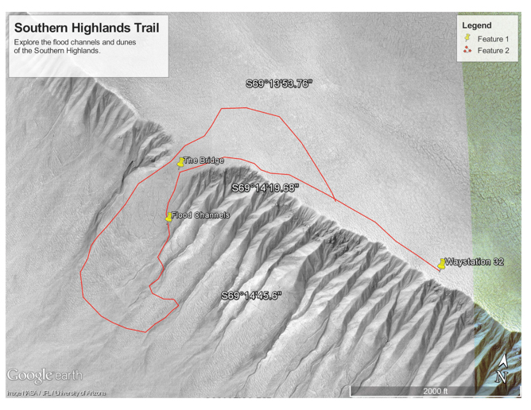

Hikes that are out of this world!


Southern Highlands Hike Information
- Hike Rating: Very Difficult
- Distance: 2.6 miles
- Elevation Gain/Loss: 1338ft/-1400ft
- Average Slope: 23.2%/-17.0%
- Max Slope: 37.1%/-38.1%
- Amenities: Small waystation
Southern Highlands Hike
This hike is rated very difficult due to the steep elevation changes. Start a Waystation 32. Take the path to the bridge down into the flood channels. Be sure to save energy for the climb out of the flood channel area. This is the closest you will get to the flood channels. Then make your way back to the waystation.